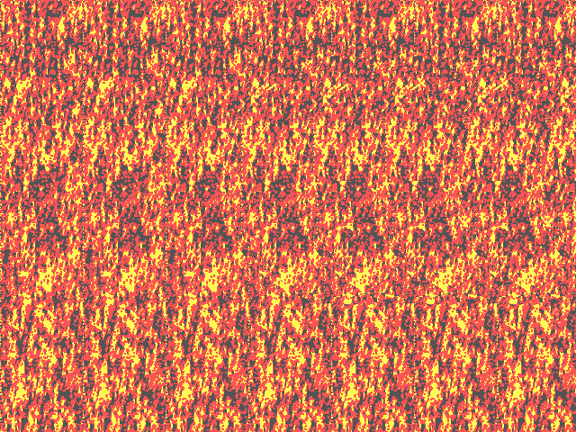
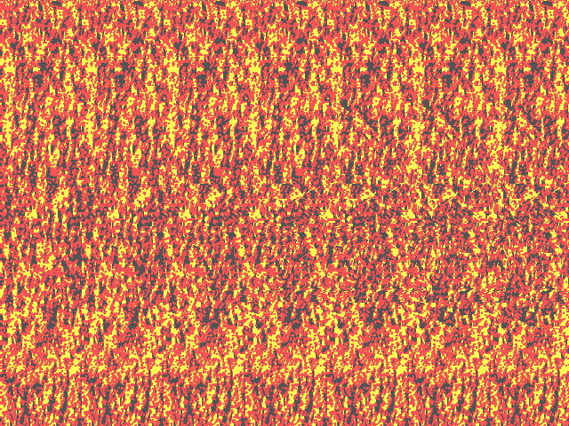
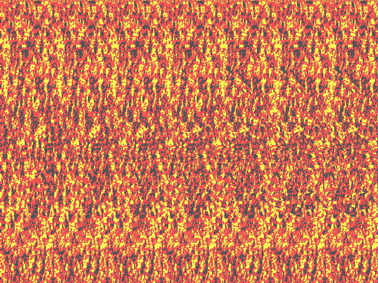

Autostereograms
- Look at the two white squares below.
- Look "through the screen" such that the two white squares become four white squares. This is similar to the effect of double vision when looking cross-eyed, except that you need to look "too far" instead of "too close".
- While looking through the screen and seeing four squares, try to match up two of the four squares such that you see three squares. In particular, focus on the square in the middle. This requires some practice.
- Hold focus on this center square until you can comfortably reproduce the focus at will.
- When having the center square in focus, slowly glance down into the image below.
- You will see an image appear, a three dimensional image!




Generated using Turbo Pascal 7.0
Original image format: PCX
Tim Samshuijzen
1994
Original image format: PCX
Tim Samshuijzen
1994